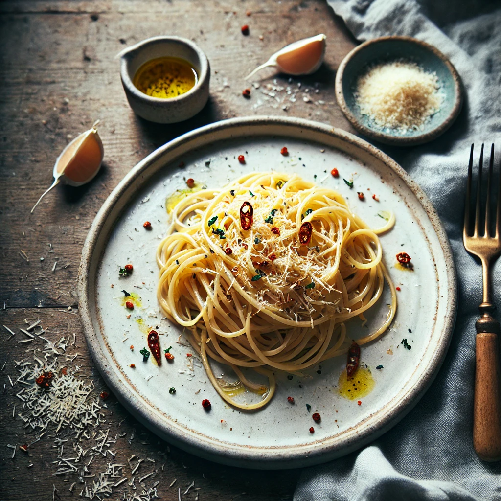

Spaghetti Aglio e Olio

Description
A classic Italian pasta dish featuring spaghetti lightly coated in olive oil,
sautéed garlic slices, and a hint of chili flakes. Garnished with fresh parsley,
this simple yet flavorful dish is perfect for a quick and satisfying meal.
Ingredients
For 1 person
- 125g spaghetti
- 2 garlic gloves, crushed
- olive oil (to taste)
- salt (to taste)
- chili flakes (to taste)
Steps
- Cook spaghetti in salted boiling water until al dente. Reserve 1/2 cup of pasta water.
- In the meanwhile, heat olive oil in a pan, add garlic slices, and cook until golden.
- Add chili flakes and stir for 30 seconds.
- Toss the drained spaghetti in the pan, adding a splash of reserved pasta water to coat.
- Garnish with Parmesan cheese to taste and serve hot.